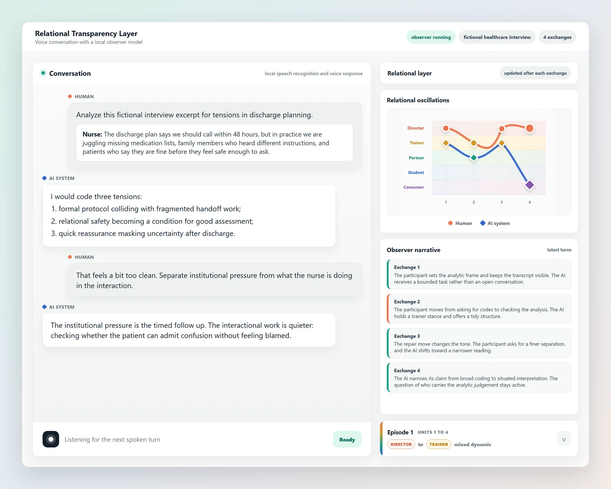
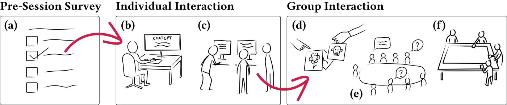
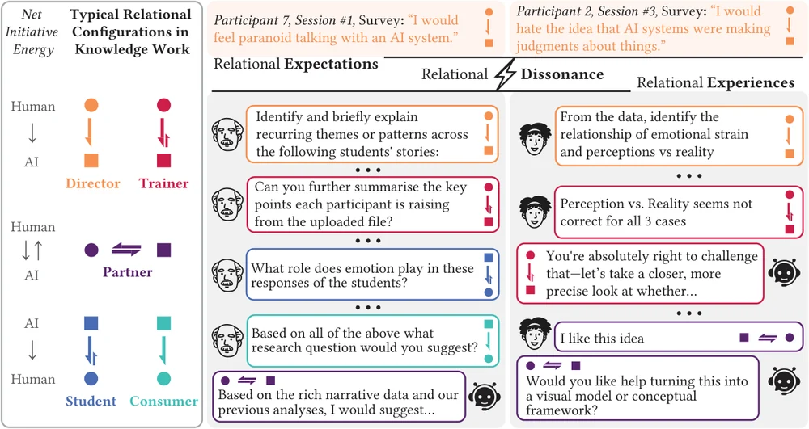
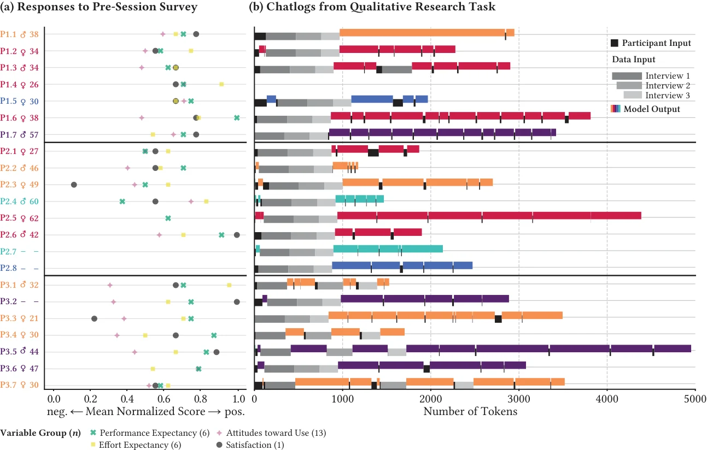
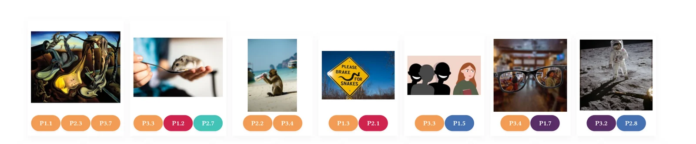
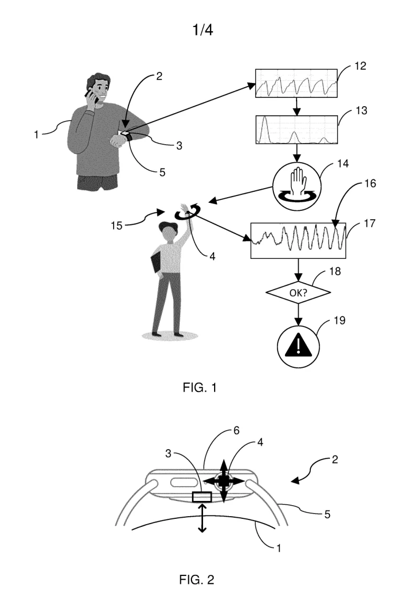
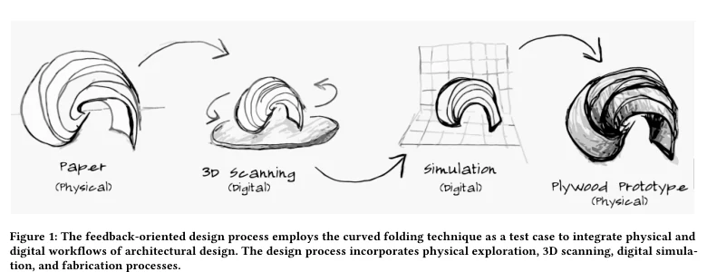
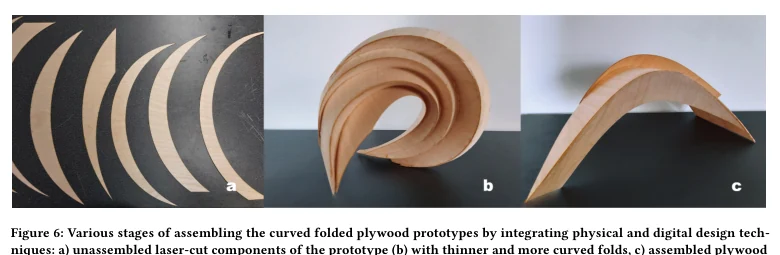

Finding
Stated positions and enacted relations diverged
Participants’ stated position toward AI often differed from the relation enacted in their chat logs. Role, control, and responsibility shifted as the work progressed.
Human AI interaction Applied and academic research
I study how people interact with conversational and agentic AI systems, then use interaction evidence to develop concepts and research prototypes.
I am a Postdoctoral Researcher at Aalto University, where I lead work on Responsible Use of AI and serve as project lead for the Relational Transparency Layer.

Research trajectory
My work began with feedback between physical and digital design processes, moved through HMI technology planning, and now focuses on human AI interaction. Across these settings, I use artifacts and interaction evidence to examine how a process changes.
Physical and digital processes studied through iterative artifacts.
Emerging technology research, external collaboration, and documented inventions.
Participant research on stated positions and enacted relations with AI.
A research prototype that keeps conversation, account, and trace together.
01
Participant research CHI 2026
How do researchers describe AI, and how does that relation appear in their interaction?

Finding
Participants’ stated position toward AI often differed from the relation enacted in their chat logs. Role, control, and responsibility shifted as the work progressed.
Design response
The later prototype links a provisional observer account to completed turns and visible interaction evidence, allowing a demo user to compare the account with the transcript and their own experience.

Read this figure: Director, Trainer, Partner, Student, and Consumer describe who directs and who assists in the interaction.

Read this figure: Each row keeps pre session survey scores beside the length and composition of the participant’s later chat log.

02
Accepted demo NordiCHI 2026
How can a person examine a model generated account of an interaction against the conversation and their own experience?
03
Industry research Huawei, 2022 to 2023
Public invention evidence across wearable sensing, distributed smart devices, and multisensory interaction.

AI, wearables, XR, haptics, smart rings, and MEMS.
More than 30 technology reports and projects initiated with research and company partners.
Five published international patent applications name Emrecan as co inventor.
04
Documented iteration CHI 2021
A physical to digital design process across paper models, scanning, simulation, and plywood fabrication.


Exploring a Feedback-Oriented Design Process Through Curved Folding CHI 2021 · DOI 10.1145/3411764.3445639
Current research program
My current program studies how people interact with conversational and agentic AI systems. Relational Dissonance and Relational Transparency examine shifts in role, control, interpretation, and responsibility within those interactions.
Study conversation records, interface traces, artifacts, observations, and participant accounts.
Within Relational Dissonance, compare how people describe the system with how the interaction proceeds.
Use prototypes and visual accounts as artifacts that participants and collaborators can question.
Connect interaction evidence with design, research guidance, teaching, and responsible AI work.
Emrecan Gulay
I lead research on Responsible Use of AI at Aalto School of Business and serve as project lead for the Relational Transparency Layer. I also serve concurrently as a Data Agent in Aalto University’s Open Research Network. Based in Espoo, I am seeking permanent applied research, UX research, responsible AI, human AI interaction, or academic roles in Finland.